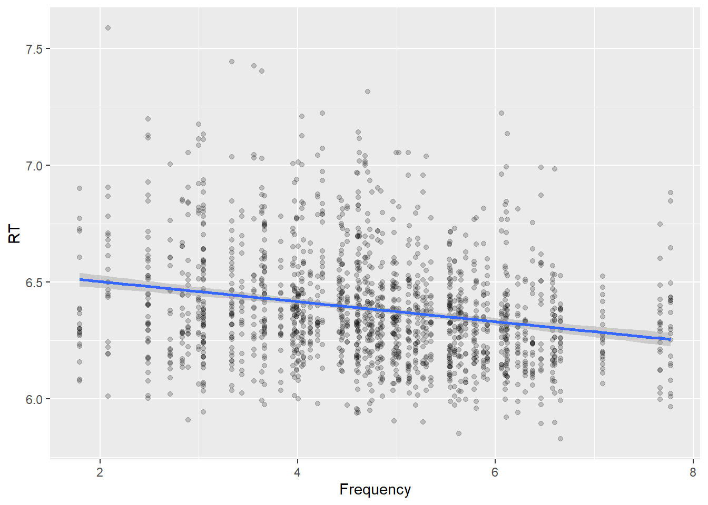
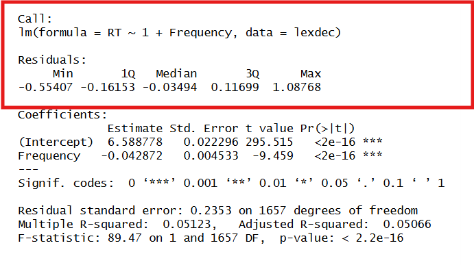
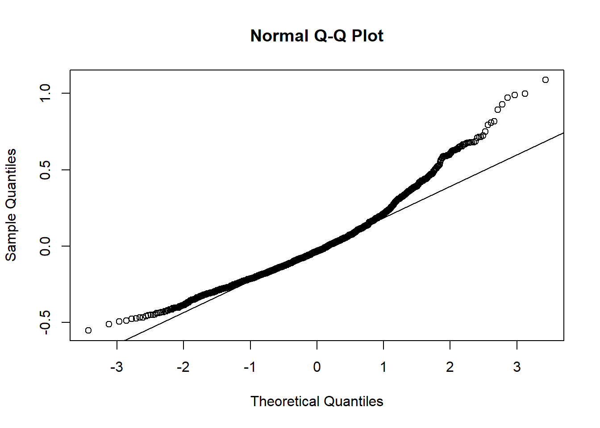
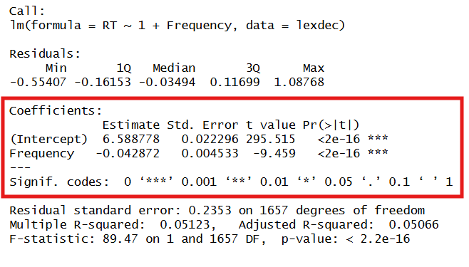

Linear Models in R with lm()
As explained in the lecture, a linear model of a dataset fits a line that minimizes the sum square errors between the predicted values and the data.
The generic function in R used to calculate a linear model fit based on data is lm() with the main arguments formula and data.
Formula notation in R
A linear model with one predictor variable can be in general expressed as:
\[ Y_i = b_0 + b_1X_i+ \epsilon_i \]
where \(b_0\) and \(b_1\) are referred to as the coefficients of the model and \(\epsilon_i\) is the error term of the fit.
\(b_0\): intercept - represents the value of the outcome variable Y, when X=0.
\(b_1\): slope - represents the change on the value of Y, due to a change of 1 unit of the value of X.
Note
Nomenclature: Sometimes you will see a linear model with coefficients indicated with a “hat” notation (\(\hat{}\)). This is to reflect that the model we build is an estimation of the real model. So \(b_0, b_1\) would represent the population parameters while \(\hat{b}_0, \hat{b}_1\) would be the estimated parameters based on our sample.
This is equivalent to the difference between the population and sample means (\(\mu\) and \(\bar{X}\)) and standard deviation (\(\sigma\) and \(s\)).
In the course for simplicity I will use the non-hat notation.
In our running example:
We would like to build a model as :
\[ RT_i = b_0+b_1Frequency_i+\epsilon_i \]
Models in R are specified using a notation in the form response~terms where response is the (numeric) dependent variable and terms are the linear predictors. A few notes:
Formulas have an implicit intercept, so it is not necessary to include it.
Error is considered by the function and calculated and it is also not included in the definition
So both formulas below are equivalent and can represent our model :
RT ~ Frequency
RT ~ 1 + Frequency
The formula can be extended to add more predictors (workgroup #4):
RT ~ 1 + Frequency + NativeLanguage
or to include interactions between predictors, using the operator : (workgroup #5):
RT ~ 1 + Frequency:Length + NativeLanguage
For now, we will focus on a single predictor.
Interpreting lm() output
The function lm() has a simple nomenclature and usage. The data it returns is nevertheless extensive and we will focus on the interpretation of the output.
Let’s look at out example:
lm(RT~1+Frequency, data=lexdec)
Call:
lm(formula = RT ~ 1 + Frequency, data = lexdec)
Coefficients:
(Intercept) Frequency
6.58878 -0.04287 Running the lm() function returns a simple set of data, with the formula reflecting again and the value of the coefficients. This result means that our model would be written as
\[ RT_i = 6.59 -0.04\times Frequency_i+\epsilon_i \]
The formula however calculates more elements. Instead, it is normally executed saving the output in a new variable.
model1 <- lm(RT~1+Frequency, data = lexdec)
names(model1) [1] "coefficients" "residuals" "effects" "rank"
[5] "fitted.values" "assign" "qr" "df.residual"
[9] "xlevels" "call" "terms" "model" As we can see, the function returns a dataframe with many elements and variables. We will go through them at different points in the course.
A simple way to display the results is to call the summary() function on the dataframe returned by lm() :
summary(model1)
Call:
lm(formula = RT ~ 1 + Frequency, data = lexdec)
Residuals:
Min 1Q Median 3Q Max
-0.55407 -0.16153 -0.03494 0.11699 1.08768
Coefficients:
Estimate Std. Error t value Pr(>|t|)
(Intercept) 6.588778 0.022296 295.515 <2e-16 ***
Frequency -0.042872 0.004533 -9.459 <2e-16 ***
---
Signif. codes: 0 '***' 0.001 '**' 0.01 '*' 0.05 '.' 0.1 ' ' 1
Residual standard error: 0.2353 on 1657 degrees of freedom
Multiple R-squared: 0.05123, Adjusted R-squared: 0.05066
F-statistic: 89.47 on 1 and 1657 DF, p-value: < 2.2e-16Let’s look at each of the output values individually:
Model residuals
The first output of the function recalls the formula used for the fit and provides the 5-point summary of the model residuals.

We will see in the next lecture that one of the conditions for the validity of a linear model is the normality (normal distribution) of the model residuals, with a mean around 0. The 5-point summary provides an indication, nevertheless a check should be performed on the data. The residuals are included in the data structure as output of the model in a field called residuals . We can assess the normality of the residuals by for example using a Q-Q Plot as we described in workgroup #2.
qqnorm(model1$residuals)
qqline(model1$residuals)
The model residuals are still significantly deviating from normality. In Workgroup #4 we will explore in details the model assessment.
Model coefficients
The second part of the table, provides the coefficients :

The table provides the two coefficients (\(b_0\) : intercept) and (\(b_1\): slope), and for each of them the following columns with the values and the results of a statistic test to check their significance.
Estimate: Coefficient value.
Std. Error: standard error of the coefficient estimate (\(\sigma_{b_i}\))
t-value: t-statistic calculated based on the value, to test the significance of the coefficient
\[ t=\frac{b_i}{\sigma_{b_i}} \]
\[ H_0:b_i=0 \] \[ H_a:b_i \ne 0 \]
- \(Pr(>|t|)\) or p-value: probability of the t-value in case \(H_0\) is true.
From the above, in our example we can see that both coefficients are significantly different from 0, so the model is confirmed to be:
\[ RT_i = 6.59 -0.04\times Frequency_i+\epsilon_i \]
Important
Model validity and Intercept interpretation:
A model is always valid around the values used to generate them, and it is important to be careful to interpret the outcome.
The intercept value of 6.59 means that a word with a lemma log Frequency value of 0, is expected to have a logarithmic reaction time of 6.59 (in lexdec dataset both RT and Frequency are logarithmically transformed values) This might not make sense, as at words with extremely low frequency, the reaction time might be even longer.
Consider the range of the data used to fit the model:
min(lexdec$Frequency)[1] 1.791759max(lexdec$Frequency)[1] 7.77191We should not use the model to predict values beyond this range.
Data fit quality
The statistical analysis shown before provides the significance assessment at individual coefficient level.
The last section of the output on the other hand, provides the statistical assessment of the model as a whole

We will describe these values in the next Lecture and Workgroup.